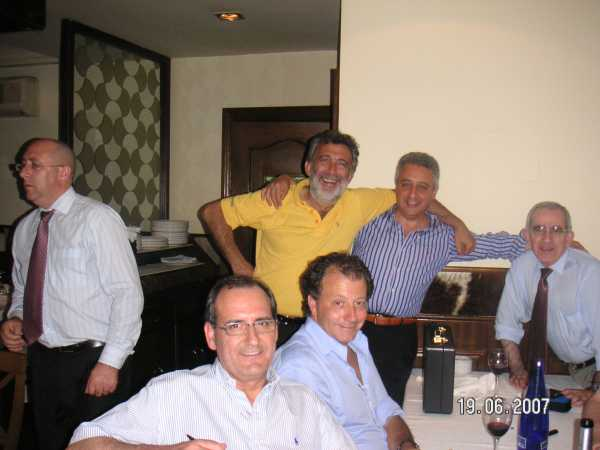

Este señor de la izquierda es que pasaba por allí justo antes de entonar el Asturias patria queridaaaa... El maletín, pues ¿qué maletín....? Nadie sabe nada de un maletín, ¿y ustedes....? Aquí la foto la dispara Barrallo.... ¿Qué tendrá el maletín...?
 |